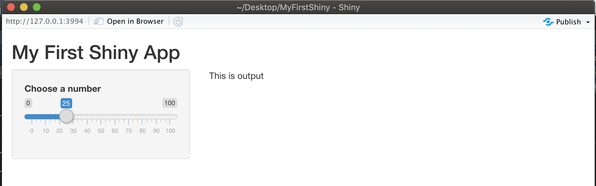

Ch 4 輸入Inputs
為了建構使用者介面(User Interface) (前端)，基本的程式碼為:
fluidPage( #頁面設定函數
titlePanel("My First Shiny App"), #標題版面(panel)
sidebarLayout( #版型(layout)
sidebarPanel(input() 輸入元件們), #側邊欄位版面(panel)
mainPanel(output() 輸出元件們) #主頁版面(panel)
)
)若需了解頁面設定函數、版面與版型的使用方式，可參考前一章節 (3)，本章節將介紹建構各種輸入元件函數的使用方法。
常見的輸入元件函數如下：
- 選單/選擇系列：
checkboxInput(): 單一選單checkboxGroupInput(): 可多選的選單列表radioButtons(): 只可單選的選單列表selectInput(): 下拉式選單
- 輸入系列：
textInput(): 輸入文字numericInput(): 輸入數字dateInput(): 數入日期dateRangeInput(): 輸入一組日期區間（兩個日期）sliderInput(): 可滑動的數字選單，初選值可有一個（0初選值）或兩個（初選值1初選值2）fileInput(): 檔案上傳
- 顯示系列
helpText(): 說明文字，樣式會跟一般的文字不同
- 按鈕系列
submitButton(): 提交按鈕actionButton(): 觸發按鈕
上述輸入元件的顯示結果如下圖 (圖片來源)：

各種輸入元件的共用參數，包括inputId、label與...，分述如下:
- inputId: 為輸入元件的名稱，為每個元件取合理且唯一的名稱，才可在Shiny App程式中取用
- label: 為輸入元件在畫面上呈現的名字，顯示用，因此必須輸入使用者看得懂的說明
- …: 每個輸入元件會有自己的特殊設定參數，可用
?輸入元件函數名稱來查詢說明文件
以sliderInput()為例，除了inputId與label外，還需要設定最小值min、最大值max以及預設數值value等三個參數，如以下範例：
fluidPage( #頁面設定函數
titlePanel("My First Shiny App"), #標題版面(panel)
sidebarLayout( #版型(layout)
sidebarPanel( #側邊欄位版面(panel)
sliderInput( #輸入元件函數
inputId = "num",
label ="Choose a number",
min = 0, max = 100,
value =25
)
),
mainPanel("This is output") #主頁版面(panel)
)
)使用上述程式碼所產出的應用程式畫面：

若想要查看各項輸入元件的範例程式碼，可至 Shiny Widgets Gallery網站查看。